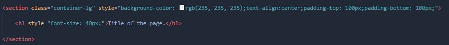
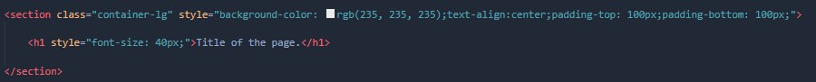
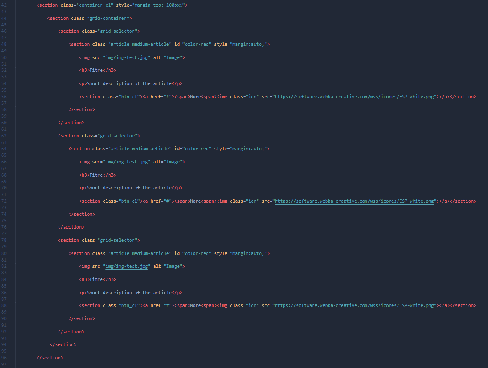
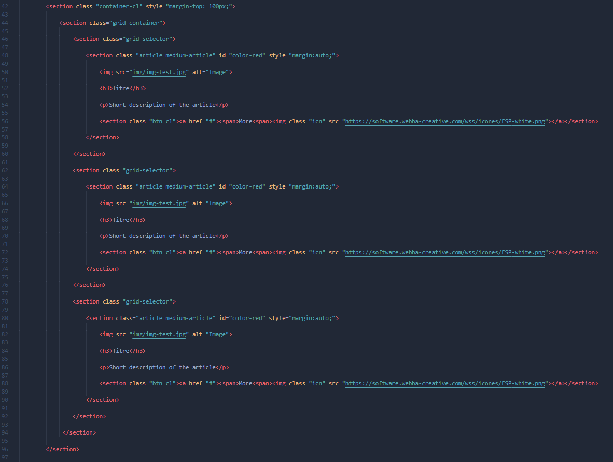

Vous allez créer un dossier qui contiendra d'autres dossiers : "css" (pour les feuilles de style), "js" (pour les scripts JavaScript), "img" (pour les images) et enfin "wss" (pour les fichiers wss), nous allons créer les pages "html" dans le dossier global.

Vous devez créer une page, avec l'extension ".html", puis l'ouvrir et commencer à taper les éléments essentiels : meta ( Cela vous permettra d'ajouter des préférences à votre page, exemple : utf-8, description... ), title ( C'est le titre de votre page, donnez-lui un nom court ), link ( Cela vous permettra de vous connecter à votre feuille de style... Nous utiliserons ceci pour connecter WSS avec votre page juste après cette étape )...

Nous allons maintenant nous connecter à la bibliothèque WSS, pour relier le CSS WSS il suffit de copier et coller cette ligne de code dans votre head (Avant vos propre feuilles de style) ou vous pouvez télécharger le fichier et le placer dans le dossier "wss" que nous avons créé dans étape 1 et ensuite le connecter via votre chemin.
<link href="https://software.webba-creative.com/wss/wss.css" rel="stylesheet">
Après cela il faut connecter le Javascript de WSS, il suffit comme pour le CSS de copier et coller cette ligne de code mais cette fois à la fin de votre body, ou comme avant vous pouvez aussi télécharger le fichier.
<script src="https://software.webba-creative.com/wss/js/wss.js"></script>
Télécharger ce fichier et placer son contenu dans le dossier "wss
Télecharger
Copier-coller et modifier ce code dans votre heade avant vos feuilles de style :
<link href="[votre chemin]wss/wss.css" rel="stylesheet">
Copier-coller et modifier ce code à la fin de votre body :
<script src="[votre chemin]wss/js/wss.js"></script>

Plaçons ensemble votre première NavBar, pour une première nous choisirons la plus simple de toutes, la noire avec logo et menu à gauche. Comment la placer ? C'est très simple, copiez et collez ce code dans votre balise de corps, vous pouvez délimiter la zone avec des commentaires.
<section class="navigation-complete-logo" id="nav-color-black">
<section class="container-lg">
<section class="navigation-container">
<section style="display: flex;align-items: center;"><section class="navItem"><a href="#"><img src="logo.png" alt="logo"></a></section>
<section class="navButton" id="navBtn" style="margin-left: auto;margin-right: 40px;"><a onclick="JavaScript:navMenu()"><img src="https://software.webba-creative.com/wss/icones/navPhone.png" style="width: 30px;height: auto;"></a></section></section>
<section id="links">
<section class="navItem"><a href="#"><span class="actual-nav-black"><h4>Home</h4></a></section>
<section class="navItem"><a href="#"><h4>Presentation</h4></a></section>
<section class="navItem"><a href="#"><h4>Contact</h4></a></section>
</section>
</section>
</section>
</section>
Bien sûr, vous devez changer le "logo.png" vers le chemin d'accès de votre logo.


Voilà, nous avons une NavBar mais nous n'avons rien dans la page ! Nous allons commencer par l'en-tête de la page (la partie supérieure), nous allons créer un conteneur-lg (large) et arranger un peu de texte pour créer cette nouvelle zone. Voici la présentation des conteneurs :
Small Container (50%)
<section class="container-sl">
Classic Container (80%)
<section class="container-cl">
Large Container (100%)
<section class="container-lg">
 

Ensuite, pour le corps de la page, nous allons placer des articles moyens, mais nous avons besoin d'une grille avant cela, c'est pourquoi nous allons le placer maintenant.
<section class="grid-container"> <section class="grid-selector"> <p>Element 1</p> </section> <section class="grid-selector"> <p>Element 2</p> </section> <section class="grid-selector"> <p>Element 3</p> </section> </section>


Maintenant que nous avons la grille, nous pouvons placer les articles à l'intérieur, voici le code d'un article moyen :
<section class="article medium-article" id="color-red" style="margin:auto;"> <img src="Image" alt="Image">
<h3>Titre</h3>
<p>Brève description de l'article</p>
<section class="btn_cl"><a href="#"><span>En savoir plus</span><img class="icn" src="https://software.webba-creative.com/wss/icones/ESP-white.png"></a></section>
</section>
 

Maintenant que vous savez comment faire un site simple, n'oubliez pas : c'est le même principe pour tout le reste, alors lisez la documentation et laissez vos idées faire le reste.
Documentations
Démarrer :
Créez votre premier fichier "html" >
Connexion à la bibliothèque WSS >
Placement des éléments :
Placez votre première barre de navigation >
Placez les conteneurs et disposez l'en-tête >
Ajouter une grille pour les articles >
Placez les articles à l'intérieur de la grille >
Votre rôle :